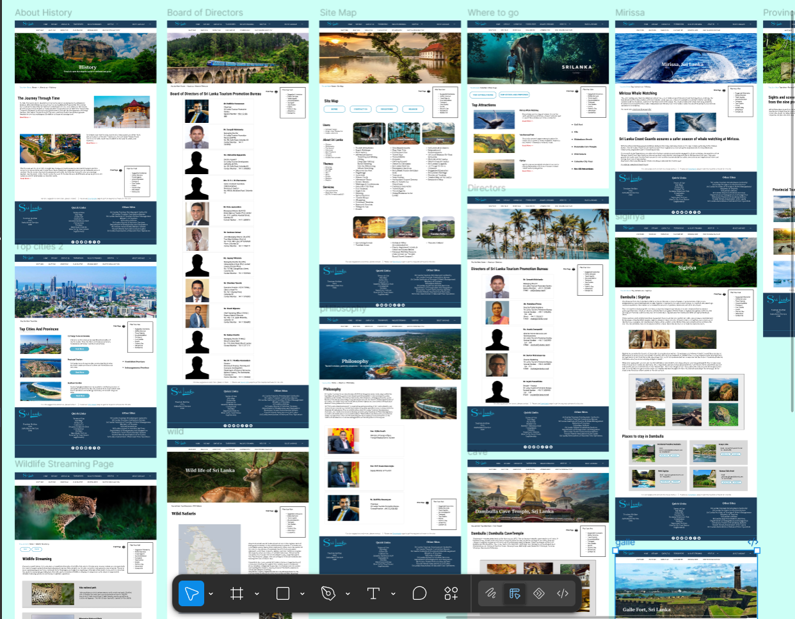
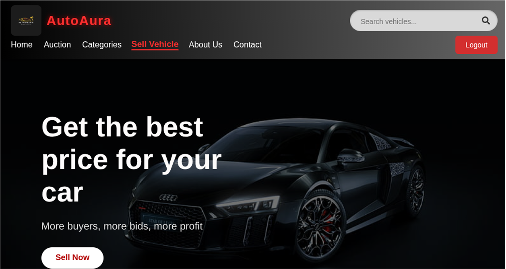
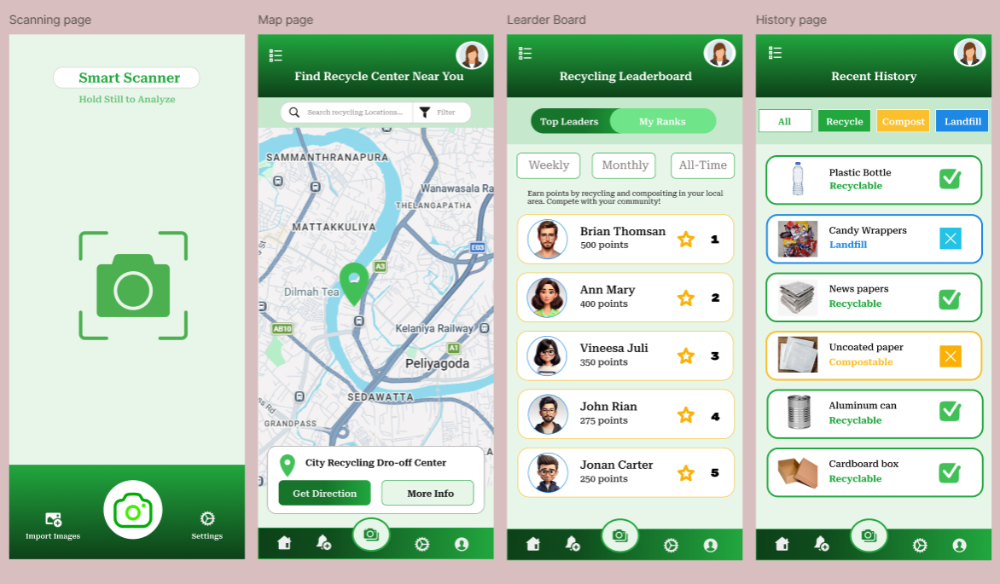
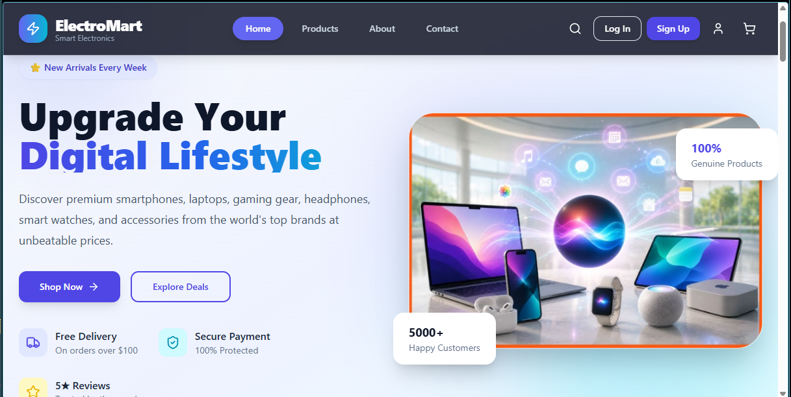
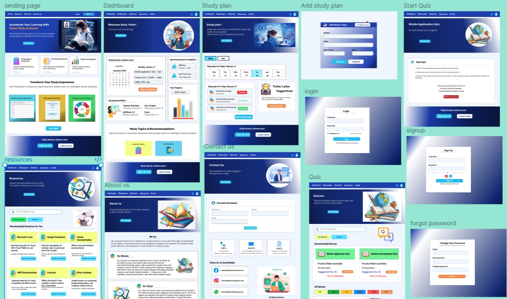

Redesign the Official website of Sri Lanka Tourism.

A RESTful API for a vehicle auction platform, handling everything from listing cars to bidding and managing non-paying users.

Designed a mobile app for a sustainable waste management through Intelligent Technology.

ElectroMart — Electronics E-Commerce Frontend

MindBloom - Smart Study Assistant Website
The official Sri Lanka Tourism website through a team-based UI/UX redesign using Figma, blending modern
design principles with Sri Lanka’s cultural identity. The project involved restructuring information architecture, crafting
high-fidelity wireframes and interactive prototypes, and applying responsive design techniques to ensure seamless
experiences across devices. Design decisions were driven by usability, accessibility, and performance, resulting in an
intuitive, visually engaging platform tailored for a global audience of travelers.
• UI/UX design using Figma
• Wireframing, prototyping & design systems
• Responsive and mobile-first layouts
• Information architecture optimization
• Collaborative design workflows and iteration
This RESTful API powers a vehicle auction platform. It allows users to create auctions by listing cars with details like make, model, year, and a minimum price. Buyers can browse and place bids. The system also manages the auction lifecycle,
including a robust process for handling non-paying bidders with a second-chance offer system and user penalties to ensure fairness.
C#, ASP.NET Core 9, PostgreSQL, Redis, React.js, WebSockets, Stripe API (with Escrow), JWT, Docker, AWS (EC2, RDS, ElastiCache)
Users can list vehicles for auction with a specified brand, model, year, minimum price, and expiration date.
Buyers can place bids on active auctions. The API validates bids to ensure they are higher than the current highest bid and meet the minimum price.
3. Non-Payment Handling -
A robust system is in place to manage non-paying bidders, including "second-chance" offers to the next highest bidder and a strike system to penalize non-compliant users.
Secure user registration and login are handled to ensure that only authenticated users can perform actions like bidding and listing vehicles.
The system is designed to provide real-time updates on bids and auction status.
Waste management and recycling have become major concerns in modern society due to the increasing amount of household, commercial, and electronic waste generated every day.This project introduces BinGo, a mobile application developed to support users in making better waste diposal decisions through a simple and intelligent digital platform.
1. Intelligent Scanning - Capture or upload images of waste items for instant AI-based classification.
2. Actionable Guidance - Receive disposal preparation instructions and recycling tips tailored to each item.
3. Center Discovery - Find nearby recycling centers and facilities specialized in different waste types.
4. Gamification - Earn points, badges, and rank on leaderboards to encourage sustainable behavior.
Mobile platform - Flutter, Dart
Backend API - Express.js, TypeScript
Database - MongoDB
Artificial Intelligence - Google Gemini AI
Security - JWT Authentication
A modern, fully responsive electronics e-commerce web application built with React, TypeScript, and Tailwind CSS. Inspired by premium e-commerce experiences like Apple Store and Best Buy.
1. Shopping Experience -Browse products across 9 categories — Smartphones, Laptops, Headphones, Tablets, Smartwatches, Cameras, Speakers, Gaming Accessories, Monitors
2. Search & Filter - Real-time search by product name, Filter by category, brand, price range, and minimum rating
3. Cart & checkout- Add, remove, and update quantities in cart, Full 3-step checkout flow — Address → Payment → Review
4. user Account - Login & Signup pages with form validation and password strength meter, Profile page with 5 tabs
5. Wishlist - Save products with heart icon from any page
6. Homepage Section - Hero banner with CTA button
7. Responsive Design - Mobile-first design that works on all screen sizes, Hamburger menu with full mobile navigation
React - UI component library
TypeScript - Type-safe JavaScript
Tailwind CSS - Utility-first CSS framework
React Router DOM v6 - Client-side routing
Vite - Build tool & dev server
Context API - Global cart & wishlist state
LocalStorage - Cart persistence across sessions
Lucide React - Icon library
MindBloom is a modern Smart Study Assistant website designed to help students
improve their learning experience through personalized study planning, interactive quizzes, and progress tracking. The frontend provides
an intuitive, responsive, and user-friendly interface that enables students to organize their studies, monitor a
cademic performance, access educational resources, and stay motivated throughout their learning journey.
1. Landing Page
2. Student Dashboard
3. Study Planner
4. Quiz Module
5. Progress Tracking
6. Learning Resources
7. Notification Center
React.js
JavaScript
React Router DOM
React Icons